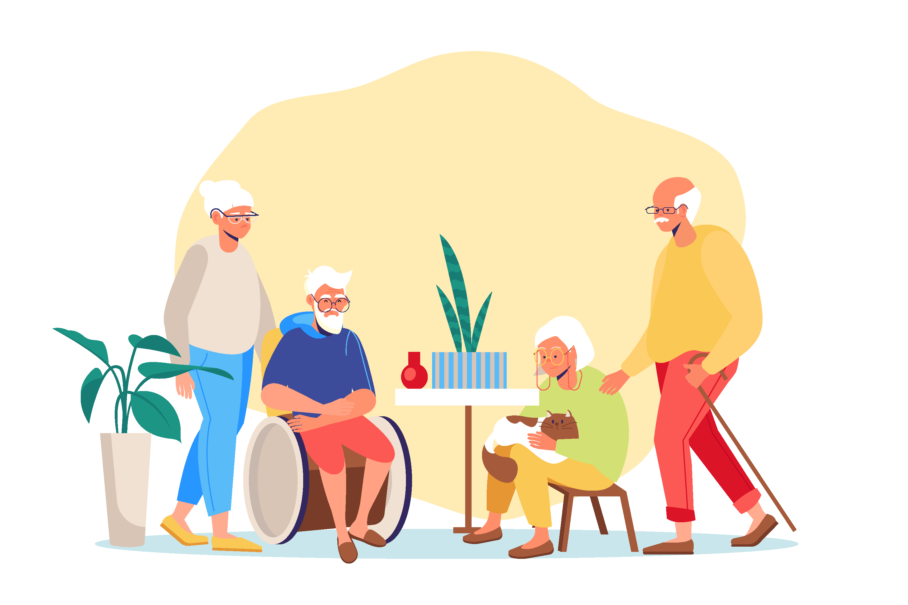
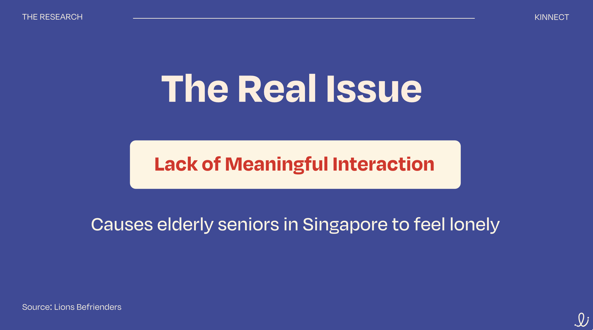

Kinnect
2 minutes, one card, real connection — a social-impact card game and mobile app, made as a group project.
39% of Singaporeans aged 62+ report feeling lonely, and 86% of them live with family. Sharing a home isn’t the same as feeling connected: in multigenerational households, school, work and screens fill the day, and real interaction slips away. Two surveys confirmed it from both sides — seniors (63+) wanted more quality time and shared activities, and 13–25s wanted exactly the same, and were open to an app to stay close to their grandparents.
Loneliness here isn’t a distance problem, it’s an attention problem. The solution couldn’t ask for more time, only for a lower barrier to starting a conversation: two minutes, one prompt, no planning. And since screens were part of the problem, it couldn’t lead with an app. The challenge was a system simple enough for every generation, from teens to grandparents.
Short term, the card game — a physical deck of conversation prompts in four categories: Today.., What if.., Imagine, Your Generation. It sits on the table, works for every age, needs no onboarding, and is sold at pop-up stands outside community centres and libraries around National Grandparents Day. Long term, the app — a QR code inside the box unlocks challenges, streaks, mini-games and shared progress that turn one good evening into a habit, with text and navigation resized after user testing with elderly players. Awareness → engagement → habit.

